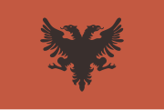

Ngjarja e Pavarësisë
Më 28 nëntor 1912, në Vlorë, Shqipëria shpalli Pavarësinë e saj nga Perandoria Osmane. Ismail Qemali ishte figura udhëheqëse e shpalljes, që shënoi një moment të rëndësishëm në historinë e kombit shqiptar. Shpallja e Pavarësisë ishte një hap i rëndësishëm drejt formimit të një shteti të pavarur shqiptar dhe një nxitës i ngjarjeve që do të pasonin gjatë shekullit XX.
Rëndësia e Pavarësisë
Shpallja e Pavarësisë së Shqipërisë, më 28 nëntor 1912, është një nga ngjarjet më të rëndësishme në historinë e kombit shqiptar. Rëndësia e saj qëndron në disa aspekte kryesore:
- Fundi i sundimit osman: Shpallja e pavarësisë i dha fund shekujve të sundimit osman në Shqipëri, duke i dhënë fund një periudhe të gjatë të nënshtrimit dhe mungesës së sovranitetit.
- Krijimi i shtetit shqiptar: Shpallja e pavarësisë shënoi lindjen e shtetit të pavarur shqiptar, duke i dhënë kombit shqiptar një identitet dhe sovranitet të ri.
- Ruajtja e identitetit kombëtar: Në një kohë kur territoret shqiptare ishin në rrezik nga fuqitë e tjera ballkanike, shpallja e pavarësisë ishte një akt i guximshëm që ndihmoi në ruajtjen e identitetit kombëtar dhe të integritetit territorial.
- Vendosja e vetëvendosjes: Shpallja e pavarësisë ishte një shprehje e vullnetit të popullit shqiptar për të vendosur vetë për fatin e tyre, duke hedhur poshtë ndërhyrjet e huaja.
- Një akt historik: Shpallja e pavarësisë ishte një moment historik që bashkoi shqiptarët nga të gjitha trevat, duke treguar vendosmërinë e tyre për të krijuar një shtet të lirë dhe të pavarur.

Flamuri i Pavarësisë së Shqipërisë